How the Code Functions¶
This page contains a series of flow charts which describe how various modules and pipelines function. Module flow charts show how the classes perform their required functions, and pipeline flow charts show which modules are called within the pipeline.
Legend¶
The meanings of the different symbols used in the flow charts are defined below:
Green Oval - Start of module/pipeline Purple Hexagon - Input Orange Hexagon - Output Red Parallelogram - CX-ASAP file Blue Rectangles - Plain - Process or algorithm Blue Rectangles - Gradient - Process imported from CX-ASAP White Double Rectangle - External program White Diamond - Decision made by CX-ASAP
Modules¶
ADP Analysis Module¶
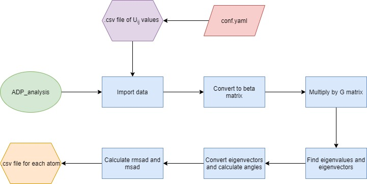
Cell Analysis Module¶
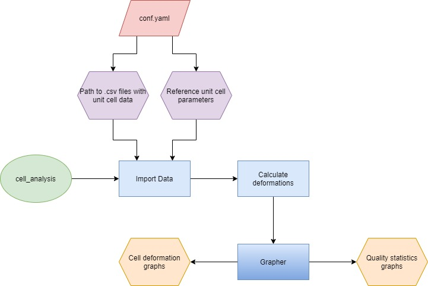
CIF Merge Module¶
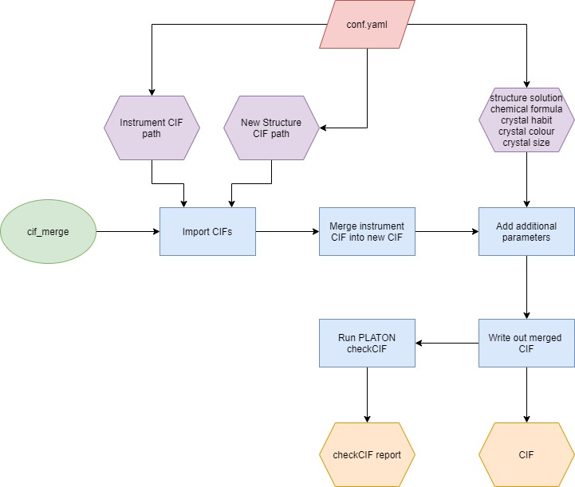
CIF Read Module¶
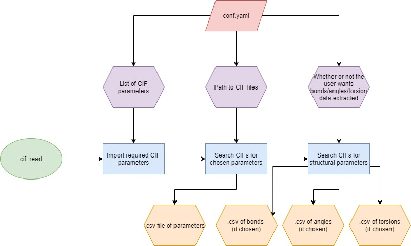
Instrument CIF Generation Module¶
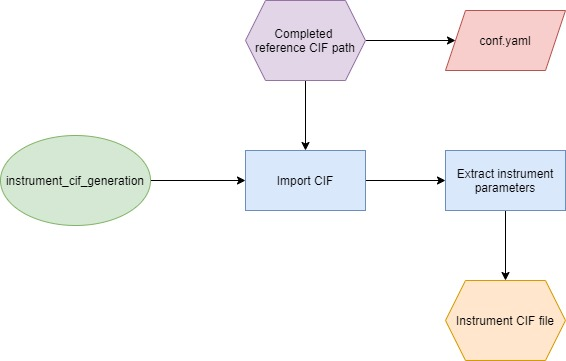
Molecule Transformation Module¶
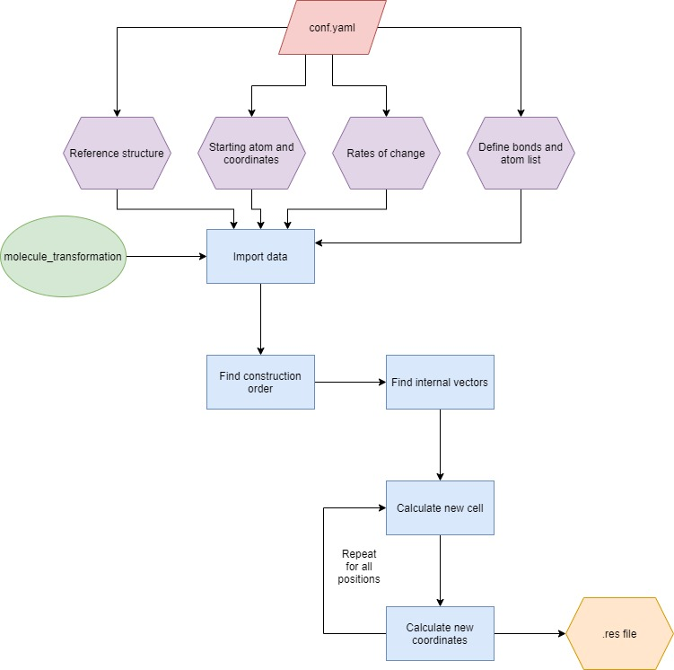
PLATON Squeeze Module¶
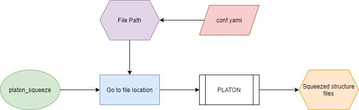
Refinement Module¶
Rotation Planes Module¶
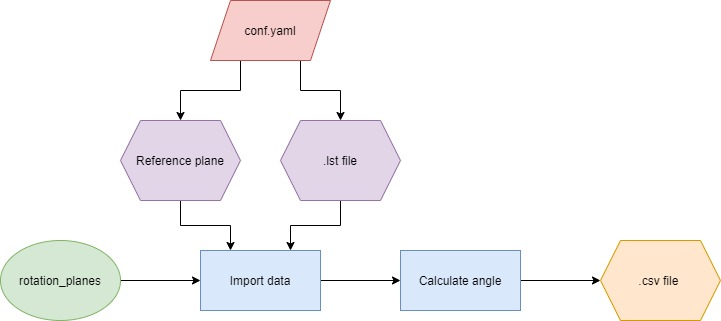
Structural Analysis Module¶
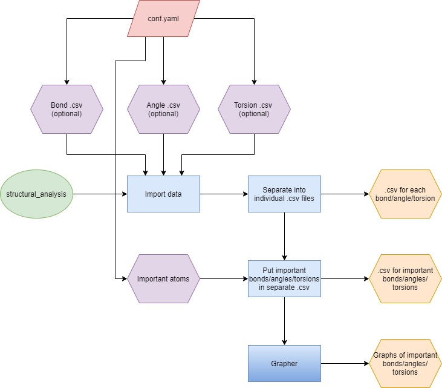
XDS Cell Transformation Module¶
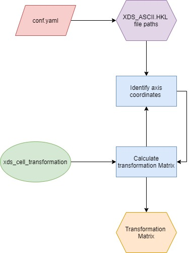
XDS Reprocess Module¶
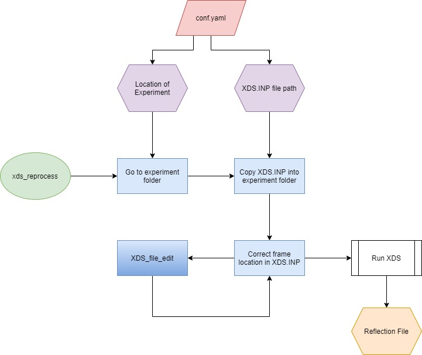
XPREP Module¶
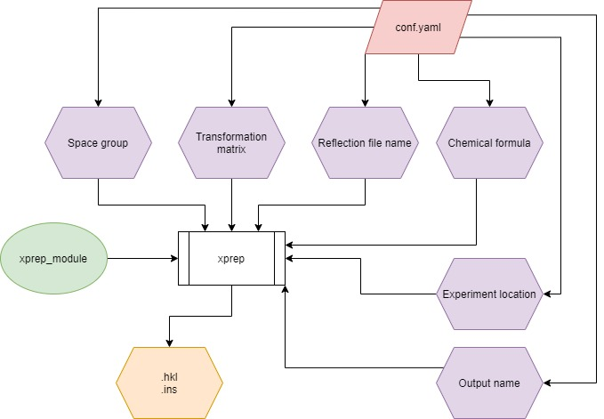
XPREP Intensity Comparison Module¶
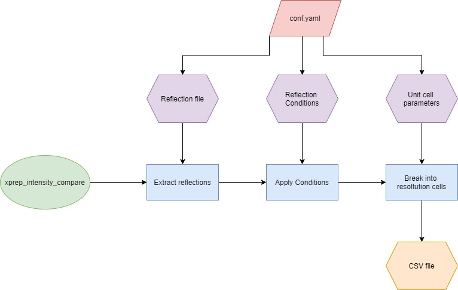
Pipelines¶
How Job Specific Pipelines Work¶
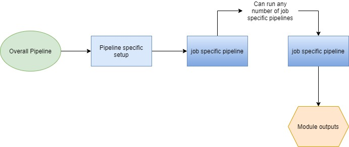
CXASAP Pipeline (General)¶
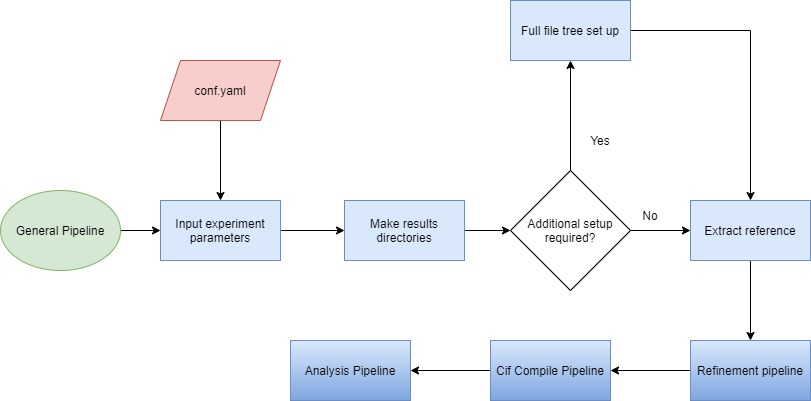
Job Specific Pipeline¶
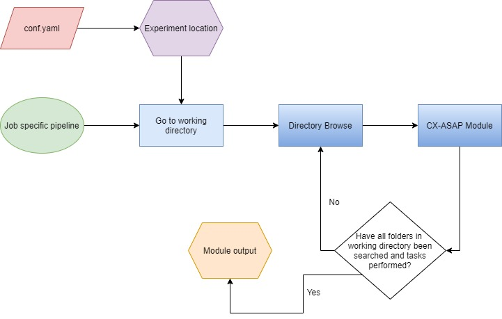
Rigaku VT Pipeline¶
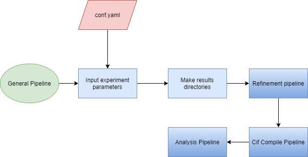
Variable Position Pipeline¶
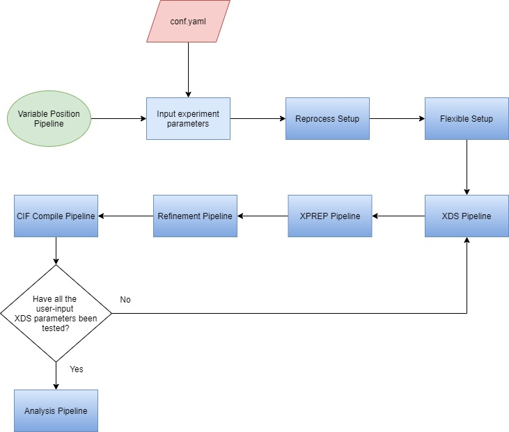
Variable Temperature Pipeline (Australian Synchrotron)¶
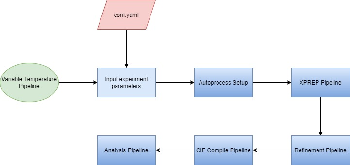